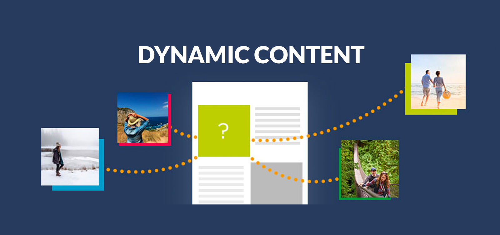

<div class="wrapper">
  <div class="content">
    <p>
      Dynamic content (aka adaptive content) refers to web content that changes
      based on the behavior, preferences, and interests of the user. It refers
      to websites as well as e-mail content and is generated at the moment a
      user requests a page. Dynamic content is personalized and adapts based on
      the data you have about the user and on the access time, its goal being to
      deliver an engaging and satisfying online experience for the visitor.
      Generally powered by applications and scripts, dynamic content works in
      tandem with static content. A classical example is the HTML content of a
      landing page or of an e-mail that changes to display information that is
      relevant for the viewer based on location or previous interactions with
      the website. An e-mail where the user`s name is retrieved from the
      database and inserted automatically via HTML text is another example of
      dynamic content.
    </p>
    
    <p>
      Now that you have clarity on the actual application areas of dynamic
      content across various stages of your digital marketing strategy, let`s
      wrap up with a look at the best practices to keep in mind while
      formulating your dynamic content strategy and selecting areas of
      implementation:
    </p>
    <p>
      1. Determine Martech Purchase As we explained before, the depth of your
      dynamic content implementation will depend on the level of personalization
      technology your organization has or plans to purchase. Personalization
      provided by typical content marketing tools is usually
      basic-to-intermediate level. If you can invest in a technology such as a
      CDP, that will allow individualized dynamic content and deliver precise
      content and brand experiences required for better marketing conversions.
    </p>
    <p>
      2. Prioritize Marketing Goals and Metrics What is your ultimate marketing
      goal? Which area of marketing deliverable is your highest priority to
      drive results that will determine marketing success? For instance:
    </p>
    <ul>
      <li>
        If your goal is to increase email conversion, you will need to implement
        dynamic content and personalizations to your email campaign.
      </li>
      <li>
        If your goal is to generate more ad traffic and show better ROI on paid
        promotions, your dynamic content implementation will prioritize display
        and text ads.
      </li>
      <li>
        If your goal is to improve on-page session time and reduce bounce rate,
        go for a smart recommendation engine.
      </li>
    </ul>
    <p>
      3. Leverage Cross-channel User Data While this is an advanced
      implementation, a true dynamic content strategy that can generate real
      personalization must strive to gather as much cross-platform and
      cross-device user data as possible. CDP-powered omnichannel campaigns are
      ideal, however, even deep-diving freely available tools like Google
      Analytics and your own product software (if it applies) can provide you
      with the basic information required to take omnichannel information into
      consideration while formulating your dynamic content strategy.
    </p>
  </div>
</div>
